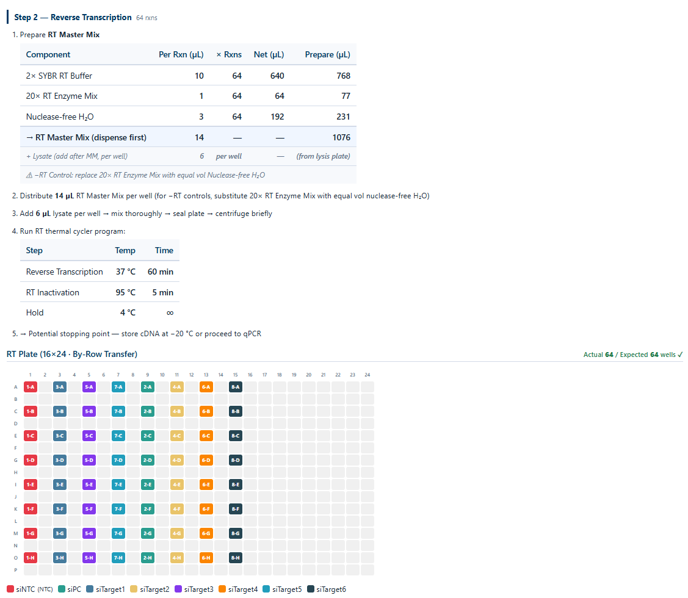

What it does
- Designs end-to-end 2-step RT-qPCR experiments with the Power SYBR® Green Cells-to-Ct™Kit.
- Generates cell seeding layouts, RT plate maps, and qPCR plate maps.
- Automates reagent volume calculations per the kit protocol.
How it works
Define groups & targets
Enter cell-line / treatment groups, target genes, replicate counts and the housekeeping gene.
Generate seeding plate
96-well cell-seeding map respecting your group / replicate layout, with edge-well exclusion options.
Build plate maps
RT plate (96-well) and qPCR plate (96 or 384-well) generated with mapped sources and reagent volumes.
Export
Download CSV plate maps and a reagent recipe sheet ready for the bench.
What it looks like
Define groups, targets & replicates
Enter cell-line / treatment groups, target genes and replicate counts; the tool calculates total well usage and warns when the layout exceeds plate capacity.

RT plate map
RT plate map is generated automatically with replicate grouping and optional edge-well exclusion.

qPCR plate map & reagent recipes
96 or 384-well qPCR plate map with mapped sources, followed by the reagent volume recipe sheet following the Cells-to-Ct? Kit protocol. Export everything as CSV ready for the bench.